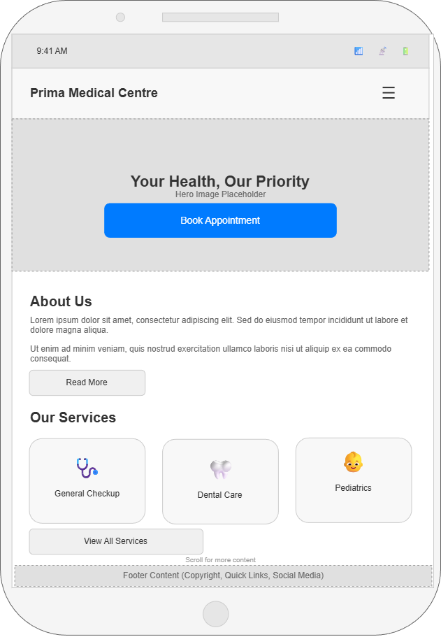

Site Name - Prima Medical Centre
This name represents a trusted healthcare facility that offers medical services to families and individuals in a professional environment. The name is simple, recognizable, and appropriate for an informational website.
Optional domain: primamedicalcentre.com.gh
Site Purpose
The purpose of this website is to provide clear and accessible information about the medical services offered at Prima Medical Centre. This includes clinic hours, available doctors, service details, contact information, and appointment options.
Scenarios
- How can I find information about the doctors and services offered at Prima Medical Centre?
- How do I book an appointment or contact the clinic?
- How do I contact Prima Medical Centre for more information about their services?
Color Schema
- #004080 - Primary color for headings and navigation bar (trust, professionalism)
- #00A8E8 - Accent color for buttons, links, and highlights
- #F0F4F8 - Background color for main content and cards
Typography
- Roboto - Body text for readability and clarity
- Montserrat - Headings (h1, h2, h3) for a modern professional look
- Open Sans - Footer and secondary sections for contrast
Wireframes
These sketches represent the homepage layout in both mobile and desktop views.
Mobile View
